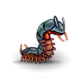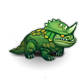
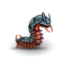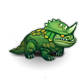

 The Antediluvian Jungle is an area accessed through a rare forest wilderness encounter. It is not possible to immediately leave the jungle, nor to immediately revisit it after escaping.
The encounter seems to require a minimum character level of 28.
The Antediluvian Jungle is an area accessed through a rare forest wilderness encounter. It is not possible to immediately leave the jungle, nor to immediately revisit it after escaping.
The encounter seems to require a minimum character level of 28.The jungle consists of open areas populated by groups of related monsters. Each area has a chance to lead out of the jungle instead of into another area. A wall of thorns will appear behind the PC when visiting a new area, to prevent immediately leaving. The antediluvian trees in the jungle can be handled to summon rattlesnakes, giant spiders, and giant lizards.
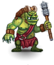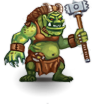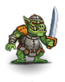
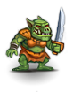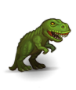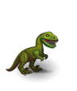
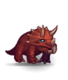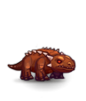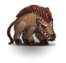
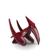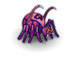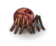
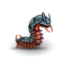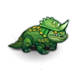
Troll chief: Level: 1, DV: 22, PV: 16, Hits: 105, Attacks: 2, Damage: 2d10+14, Speed: 115. Troll: Level: 1, DV: 13, PV: 12, Hits: 75, Attacks: 2, Damage: 2d10+14, Speed: 105. Orc chieftain: Level: 1, DV: 18, PV: 10, Hits: 60, Attacks: 3, Damage: 2d10+6, Speed: 125. Orc: Level: 1, DV: 14, PV: 4, Hits: 25, Attacks: 2, Damage: 2d6+3, Speed: 110. Tyrannosaurus: Level: 1, DV: 18, PV: 6, Hits: 150, Attacks: 1, Damage: 5d7+19, Speed: 90. Velociraptor: Level: 1, DV: 18, PV: 4, Hits: 15, Attacks: 2, Damage: 1d7+1, Speed: 110. Triceratops: Level: 1, DV: 15, PV: 15, Hits: 70, Attacks: 1, Damage: 3d6+6, Speed: 100. Ankylosaurus: Level: 1, DV: 12, PV: 25, Hits: 85, Attacks: 1, Damage: 1d36+4, Speed: 90. Entelodon: Level: 1, DV: 18, PV: 20, Hits: 80, Attacks: 1, Damage: 3d8+6, Speed: 100. Pteranodon: Level: 1, DV: 19, PV: 3, Hits: 30, Attacks: 1, Damage: 2d6+4, Speed: 105. Chaos spider: Level: 1, DV: 22, PV: 12, Hits: 70, Attacks: 1, Damage: 2d12+4, Speed: 100. Giant spider: Level: 1, DV: 14, PV: 1, Hits: 20, Attacks: 1, Damage: 3d3, Speed: 100. Large spider: Level: 1, DV: 14, PV: 0, Hits: 10, Attacks: 1, Damage: 1d6, Speed: 100. Giant centipede: Level: 1, DV: 12, PV: 2, Hits: 3, Attacks: 1, Damage: 1d2, Speed: 100. Giant lizard: Level: 1, DV: 12, PV: 6, Hits: 17, Attacks: 1, Damage: 2d4, Speed: 100. Rattlesnake: Level: 1, DV: 27, PV: 0, Hits: 12, Attacks: 1, Damage: 2d3, Speed: 100. |